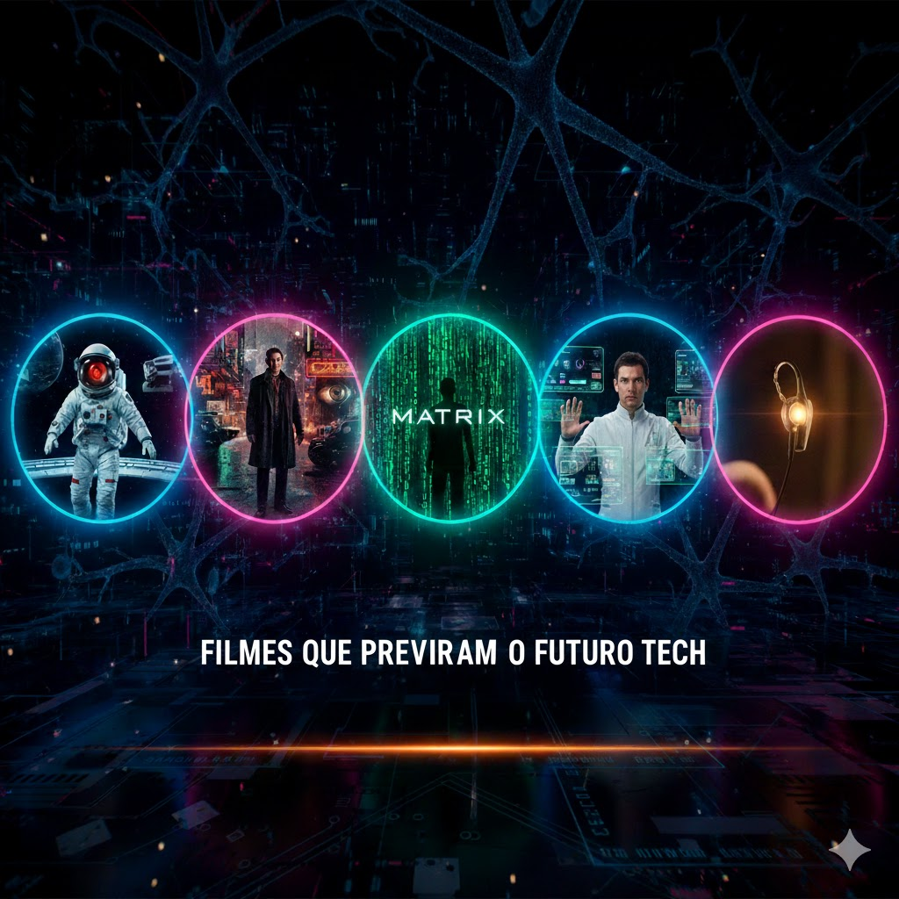
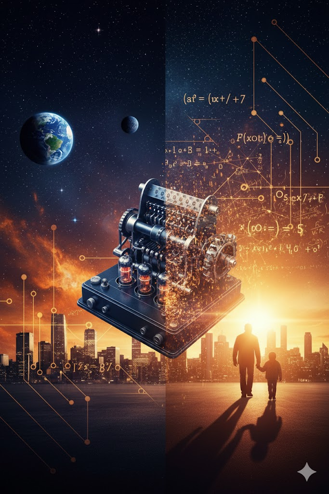

🎬 Séries & Filmes
A intersecção entre a sétima arte e a inovação tecnológica.

Cultura & Futuro
Top 5 Filmes que Anteciparam o Futuro Tech
De Kubrick a Spielberg: uma análise profunda sobre as obras que previram interfaces gestuais e IA décadas antes da realidade.
CONTINUAR LENDO

Curadoria Editorial
A Vida Imita a Arte: 5 Obras Primas Baseadas em Fatos Reais
De Alan Turing a Chris Gardner: mergulhe nas trajetórias reais que mudaram o mundo e emocionaram plateias globais.
VER LISTA COMPLETA